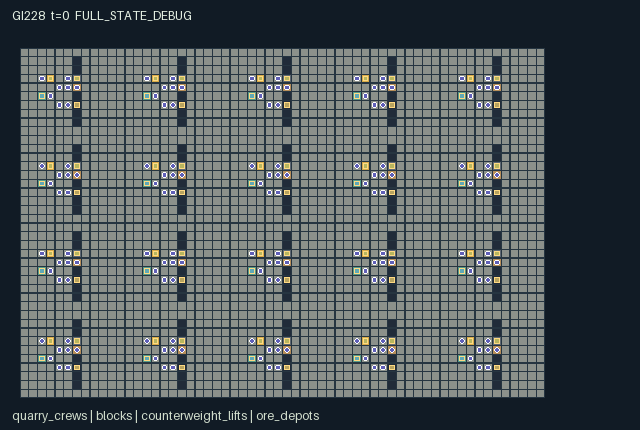

GI228 / SPATIAL
Skybridge Quarry Cooperative
Release verification episode
Untrained uniform legal actions. Actual JAX state sampled along the full original episode; full-state debug camera. No human performance or learning claim.

Run this game
crucibles play --game 228
Start Python locally, then open the address printed by the terminal. Installation, multiplayer, takeover and keyboard controls →
Objective, rewards & ending
Exact task contract
{
"objective": "Mine the twenty initial ore blocks and deliver all carried ore to physical depots while maintaining usable terrain and crew survival.",
"natural_termination": "Terminate when no ore tile remains and no actor carries ore, or when every actor has zero health. Otherwise truncate at t=768. Natural termination has priority.",
"interaction": "Removing a support removes its bridge, damages an occupant and blocks grounded movement; another actor can restore the missing floor using stone. Riding a loaded lift consumes 1 or 2 local counterweight units and supplies its paired lift (consecutive crew IDs 0/1, 2/3, ..., 18/19). Shared depots, scarce stone, tool exchange and spatial handoffs link crews.",
"observation_access": "A 7x7 local terrain/occupancy patch; self inventory and health; detailed visibility limited to self plus four nearest active neighbors. Blocks, lifts and depots are local. Signals travel Chebyshev radius 6. No global map or remote partner counterweight enters observations."
}Declared per-step reward bounds: -256 to 256. Observability: partially_observable.
Rules
- Select any of 160 individual actors; IDs 8*c through 8*c+7 belong to crew c. Keyboard or clickable controls must call these native action IDs; no human UI has been executed here.
- Read the actual block map: dark gaps stop walking, amber ore and gray supports can be mined, tan scaffolds restore floor. Facing actions turn without moving.
- Mining a support removes its bridge immediately. An actor on that bridge loses one health and cannot walk until someone builds floor under it; a zero-health actor only waits.
- Pick, scaffold and rigger tools can be exchanged with the actor directly ahead. Give transfers ore before stone.
- A lift spans its adjacent banks at y=6 of each terrace. A rider spends 1 counterweight, or 2 while carrying material; the paired lift gains that amount up to capacity 4.
- Stone can rebuild paths or become lift ballast. Unsupported designated scaffolds lose one strength every 32 ticks; their actual tile disappears at zero.
- Unload ore next to a depot. Its eight-person crew receives the shared delivery component; the carrier receives the individual component.
- This block-world scene is a source-bound author specification. Its scripts, interaction effects, animation, learning and solvability remain unexecuted.
Original mechanism document (historical status wording retained)
# Skybridge Quarry Cooperative Status: AUTHORED_NOT_EXECUTED. Candidate game-v3-00228, source attempt 0, train-only prospective source stream. Assigned author identity: gpt-6-astra / max; root dispatch is the authority for actual model execution. A/O/U/H = 160/154/17/768. Source SHA-256: fd2690b11faacbb506703a3951159b8c5b6d75fd4d1ef5c7ed59f3ef3ac97575. ## Native game and dependencies Twenty crews occupy one connected 60 by 40 stone world. Crew c has eight actor rows; no actor is an NPC or a repeated independent episode. Terraces have bypass routes at their row boundaries, while local bridges and paired lifts provide shorter routes. A crew's depot can accept ore hauled by an actor from any crew. People, inventories, tools and damaged floor are persistent state. There are twenty ore blocks, twenty supporting blocks and twenty designated bridges. A pick extracts one ore or one stone from the block directly ahead. Removing a support immediately removes its associated bridge. An active actor on that bridge loses one health and is left without floor. It cannot walk while ungrounded; another builder can spend stone to place a scaffold under it. Repairing floor does not heal health. At zero health an actor becomes inactive and can only wait. Dead actors retain inventory; stranded ore can therefore prevent resource-exhaustion completion until the horizon. A scaffold can also be built on any facing gap. Designated unsupported bridges have strength 3 after repair and lose one strength on each 32-tick weather boundary. Other built gap cells persist. An original support can be mined once; placing scaffold on that support cell does not turn it back into a mineable support. A lift physically moves its rider between the two neighboring banks at its y-coordinate. Its counterweight must cover one unit, or two if the rider carries any ore or stone. Those units leave the local lift and enter its paired lift, capped at 4. Pairing is by consecutive crew IDs, 0/1 through 18/19; it is a declared cable coupling, not a distance-derived pairing. Counterweight beyond capacity is discarded. A rigger can instead spend a stone to add one local ballast unit. Thus an extraction crew's route choice changes another crew's future lift access. Tools are actual transferable inventory codes: pick, scaffold kit, rigger and courier. Any actor can move, give, ride, deliver or signal; tool codes gate mining, building and ballast work. Giving prioritizes ore, then stone. Initial role labels describe initial equipment rather than permanently fixing a player's job. Plausible alternatives include leaving supports intact and taking longer bypass routes, accepting the cost of mining and rescue, coordinating alternating loaded lift trips, and reserving stone for either scaffolds or counterweights. These are source-level strategic alternatives. No ranking, equilibrium, solve rate or learning result has been established. ## Actions, observations and presentation Actions 0 through 8 are wait, four cardinal moves and four facing-only turns. Actions 9 through 16 are mine, build, unload, give, lift ride, ballast, tool swap and signal. Conditions are in the native legal mask and rechecked during resolution. The complete labels are in manifest.json and scene.json. The 154-column row has 14 self values, a 49-cell two-channel local patch, four eight-field neighboring-actor records, five lift fields and five depot fields. The manifest specifies every column and normalizer. Detailed actor visibility is self plus the four nearest active neighbors; the patch can still show other local occupied cells without their inventories. Entity metadata exposes only attributes represented by those detailed records. Remote paired counterweights are not observed. An inventory signal reaches Chebyshev distance 6 and the maximum current code is heard; it carries no secret global state. The block palette binds the real tiles. Mined blocks disappear through their active masks; missing bridge floor, cargo, ballast, depots and actor positions bind native leaves. Health is in the selected actor's own observation, not an extra visible neighbor attribute. No commercial assets, renderer physics or browser implementation are included. ## Rewards and termination reward_parts has five float32 columns, summed into the native reward vector. All receipts are per actual native tick. - Column 0 charges the acting mover 0.01 times (1 + carried ore), and charges a miner, builder or ballast operator 0.02. - Column 1 gives the actor 0.4 for unloading one ore. - Column 2 gives each of the destination depot's eight crew members 0.125 per ore unloaded there. The carrier need not belong to that crew. - Column 3 gives each rescued actor 0.2 and the builder 0.4 per actor whose missing floor it restores. - Column 4 charges an actor losing bridge support 0.5, and the actor who mined that support 0.2 per affected actor. Weather collapse charges the occupant only. The declared reward interval is [-256, 256]. A conservative analytic bound counts no more than 160 action resolutions, at most one unique active occupant per changed bridge tile, and one weather pass. The interval is a finite interface bound, not an achieved score or acceptance threshold. There are at most twenty ore deliveries in a world, so the depot normalization by twenty is bounded. Natural completion is no remaining ore tile and no carried ore, or loss of all active actors. H=768 is truncation only if neither natural condition holds. The native done vector additionally marks inactive actors; all actor dones become true exactly at joint termination. ## Hypotheses and limits playthrough.json supplies two complete literal joint-action scripts and one paired hypothesis. The rescue comparison shares a support-mining prefix, changes only actor 1's build versus wait, and uses identical waiting suffixes. Intended measurements include the actual bridge tile, recipient actor 2's grounded flag and legal moves; health recovery is expressly not predicted. The alternating-lift script addresses a different cross-crew dependency. Static author review checked syntax, declared leaf names, JSON structure and literal action dimensions. It did not execute reset, raw_step, masks, scripts, JIT, vmap or scan. Causal effects, compatibility, throughput, human animation, solvability, learning and transfer remain unverified. ## Literal source evidence These line references identify authored implementation expressions, not measured effects. - Tool and spatial legality: candidate.py line 30, literal source: `def legal_row(self, s, i):`. - Initial connected world and per-actor state: candidate.py line 81, literal source: `def reset(self, key):`. - Literal flat observation construction: candidate.py line 122, literal source: `def observe(self, s):`. - Support-to-bridge linkage: candidate.py line 179, literal source: `hit_support = jnp.all(z["support_pos"] == q, axis=1) & rock_gain`. - Affected actor selection: candidate.py line 184, literal source: `victim = jnp.any(jnp.all(z["pos"][:, None, :] == z["bridge_pos"][None, :, :], axis=2) & hit_support[None, :], axis=1) & z["active"]`. - Cross-crew counterweight transfer: candidate.py line 201, literal source: `z["weight"] = z["weight"].at[pair].set(jnp.minimum(4, z["weight"][pair] + ride.astype(jnp.int32) * load))`. - Delayed scaffold weathering: candidate.py line 229, literal source: `weather = ((s["t"] + 1) % 32) == 0`. - Absorbing native boundary: candidate.py line 248, literal source: `def raw_step(self, key, state, actions):`. ## Read-only reference use Only the current batch's authorized files were read. author_input_freeze.json records all 26 actual input files, bytes, hashes and use. The 24 payload files include this batch's four current designs/requests, shared contracts, current population/family control, general design and human-play requirements, and five named official reference snapshots. Three optional historical population addenda were not read. Earlier copied example numbers are noncontrolling. JaxMARL README informed the distinction between a simultaneous native action-row boundary and a later agent-keyed dictionary adapter. Pgx README informed explicit legal masks, separate termination causes and external key provenance; no Pgx game was copied. Craftax README informed bounded persistent world state and the separation between mechanics and rendering. PureJaxRL README and Craftax_Baselines_ppo_rnn.py were read only for JAX scan/vectorization and wrapper/algorithm separation. No upstream game code, PPO code, assets or performance claims were copied into this kernel. No reference links were opened, dependencies installed, local models invoked or scientific outcomes read. ## Boundary and evidence status The native interface is reset(key), observe(state), legal_actions(state), and raw_step(key,state,actions). All state leaves are fixed-shape int32, bool or float32 arrays declared in manifest.json. Keys are accepted but intentionally unused: these original rules and layouts are deterministic. Small integer quantities use int32 at the boundary; there is no hidden PRNG key in state. The joint input is one int32 action per actor. Resolution uses rotating priority (k + input t) modulo A. Each actor's action is rechecked against the current intermediate state, so contention can turn a previously legal intention into a deterministic wait. Environmental processes run once afterward. This is a simultaneous input interface with explicitly sequential conflict resolution, not a claim that actions commute. A nonterminal step advances the int32 clock once. Natural completion takes priority over H. An already-terminal raw call preserves the entire state, observation, clock and terminal causes and returns zero reward; it never auto-resets. Event flags refer to the last actual nonabsorbing step and are not new events on repeated absorbing calls. A separate trusted wrapper or public adapter remains outside this author package. No candidate was imported or executed. No JAX/NumPy runtime, validator, trajectory script, local model, remote job, HTTP endpoint, browser, training or evaluation was run. Standard-library AST parsing and data-only JSON/static consistency checks are not native validation. Source authoring is not an R0, causal, animation, solvability, learning or transfer receipt. No additional proposal or repair attempt was created.
Commands
Roles & abilities
agent_0 group 0 / pick miner
agent_1 group 0 / scaffold builder
agent_2 group 0 / courier
agent_3 group 0 / lift rigger
agent_4 group 0 / pick miner
agent_5 group 0 / scaffold builder
agent_6 group 0 / courier
agent_7 group 0 / courier
agent_8 group 1 / pick miner
agent_9 group 1 / scaffold builder
agent_10 group 1 / courier
agent_11 group 1 / lift rigger
agent_12 group 1 / pick miner
agent_13 group 1 / scaffold builder
agent_14 group 1 / courier
agent_15 group 1 / courier
agent_16 group 2 / pick miner
agent_17 group 2 / scaffold builder
agent_18 group 2 / courier
agent_19 group 2 / lift rigger
agent_20 group 2 / pick miner
agent_21 group 2 / scaffold builder
agent_22 group 2 / courier
agent_23 group 2 / courier
agent_24 group 3 / pick miner
agent_25 group 3 / scaffold builder
agent_26 group 3 / courier
agent_27 group 3 / lift rigger
agent_28 group 3 / pick miner
agent_29 group 3 / scaffold builder
agent_30 group 3 / courier
agent_31 group 3 / courier
agent_32 group 4 / pick miner
agent_33 group 4 / scaffold builder
agent_34 group 4 / courier
agent_35 group 4 / lift rigger
agent_36 group 4 / pick miner
agent_37 group 4 / scaffold builder
agent_38 group 4 / courier
agent_39 group 4 / courier
agent_40 group 5 / pick miner
agent_41 group 5 / scaffold builder
agent_42 group 5 / courier
agent_43 group 5 / lift rigger
agent_44 group 5 / pick miner
agent_45 group 5 / scaffold builder
agent_46 group 5 / courier
agent_47 group 5 / courier
agent_48 group 6 / pick miner
agent_49 group 6 / scaffold builder
agent_50 group 6 / courier
agent_51 group 6 / lift rigger
agent_52 group 6 / pick miner
agent_53 group 6 / scaffold builder
agent_54 group 6 / courier
agent_55 group 6 / courier
agent_56 group 7 / pick miner
agent_57 group 7 / scaffold builder
agent_58 group 7 / courier
agent_59 group 7 / lift rigger
agent_60 group 7 / pick miner
agent_61 group 7 / scaffold builder
agent_62 group 7 / courier
agent_63 group 7 / courier
agent_64 group 8 / pick miner
agent_65 group 8 / scaffold builder
agent_66 group 8 / courier
agent_67 group 8 / lift rigger
agent_68 group 8 / pick miner
agent_69 group 8 / scaffold builder
agent_70 group 8 / courier
agent_71 group 8 / courier
agent_72 group 9 / pick miner
agent_73 group 9 / scaffold builder
agent_74 group 9 / courier
agent_75 group 9 / lift rigger
agent_76 group 9 / pick miner
agent_77 group 9 / scaffold builder
agent_78 group 9 / courier
agent_79 group 9 / courier
agent_80 group 10 / pick miner
agent_81 group 10 / scaffold builder
agent_82 group 10 / courier
agent_83 group 10 / lift rigger
agent_84 group 10 / pick miner
agent_85 group 10 / scaffold builder
agent_86 group 10 / courier
agent_87 group 10 / courier
agent_88 group 11 / pick miner
agent_89 group 11 / scaffold builder
agent_90 group 11 / courier
agent_91 group 11 / lift rigger
agent_92 group 11 / pick miner
agent_93 group 11 / scaffold builder
agent_94 group 11 / courier
agent_95 group 11 / courier
agent_96 group 12 / pick miner
agent_97 group 12 / scaffold builder
agent_98 group 12 / courier
agent_99 group 12 / lift rigger
agent_100 group 12 / pick miner
agent_101 group 12 / scaffold builder
agent_102 group 12 / courier
agent_103 group 12 / courier
agent_104 group 13 / pick miner
agent_105 group 13 / scaffold builder
agent_106 group 13 / courier
agent_107 group 13 / lift rigger
agent_108 group 13 / pick miner
agent_109 group 13 / scaffold builder
agent_110 group 13 / courier
agent_111 group 13 / courier
agent_112 group 14 / pick miner
agent_113 group 14 / scaffold builder
agent_114 group 14 / courier
agent_115 group 14 / lift rigger
agent_116 group 14 / pick miner
agent_117 group 14 / scaffold builder
agent_118 group 14 / courier
agent_119 group 14 / courier
agent_120 group 15 / pick miner
agent_121 group 15 / scaffold builder
agent_122 group 15 / courier
agent_123 group 15 / lift rigger
agent_124 group 15 / pick miner
agent_125 group 15 / scaffold builder
agent_126 group 15 / courier
agent_127 group 15 / courier
agent_128 group 16 / pick miner
agent_129 group 16 / scaffold builder
agent_130 group 16 / courier
agent_131 group 16 / lift rigger
agent_132 group 16 / pick miner
agent_133 group 16 / scaffold builder
agent_134 group 16 / courier
agent_135 group 16 / courier
agent_136 group 17 / pick miner
agent_137 group 17 / scaffold builder
agent_138 group 17 / courier
agent_139 group 17 / lift rigger
agent_140 group 17 / pick miner
agent_141 group 17 / scaffold builder
agent_142 group 17 / courier
agent_143 group 17 / courier
agent_144 group 18 / pick miner
agent_145 group 18 / scaffold builder
agent_146 group 18 / courier
agent_147 group 18 / lift rigger
agent_148 group 18 / pick miner
agent_149 group 18 / scaffold builder
agent_150 group 18 / courier
agent_151 group 18 / courier
agent_152 group 19 / pick miner
agent_153 group 19 / scaffold builder
agent_154 group 19 / courier
agent_155 group 19 / lift rigger
agent_156 group 19 / pick miner
agent_157 group 19 / scaffold builder
agent_158 group 19 / courier
agent_159 group 19 / courier
Observation permissions
Training receives only the original observation rows. Role cameras use declared visibility; debug cameras are explicitly marked. Local benchmark records log debug exposure and role takeover history.
Exact observation layout
[
{
"slice": [
0,
14
],
"meaning": "Self: x/59,y/39,facing/3,stone/4,ore,tool/3,health/4,crew/19,t/768,heard/3,grounded,mined,built,rescued. Heard is the maximum current signal within Chebyshev 6; 0 silent.",
"visibility": "self"
},
{
"slice": [
14,
112
],
"meaning": "7x7 row-major patch dy=-3..3,dx=-3..3; each cell has [tile/5 (outside=-1), active actor occupancy].",
"visibility": "local"
},
{
"slice": [
112,
144
],
"meaning": "Up to 4 nearest other active actors in Chebyshev radius 3, stable distance/index order: [visible,dx/3,dy/3,tool/3,stone/4,ore,message/3,crew/19]. Missing slots all zero.",
"visibility": "local"
},
{
"slice": [
144,
149
],
"meaning": "Nearest lift when within Chebyshev 3: [visible,dx/3,dy/3,weight/4,weight>0]; otherwise all zero. Partner lift weight is not revealed remotely.",
"visibility": "local"
},
{
"slice": [
149,
154
],
"meaning": "Nearest depot within Chebyshev 3: [visible,dx/3,dy/3,delivered/20,owner index/19]; otherwise all zero.",
"visibility": "local"
}
]Entity visibility & attributes
[
{
"id": "quarry_crews",
"kind": "agent",
"count": 160,
"position": [
"pos"
],
"active": [
"active"
],
"visibility": [
"agent_vis"
],
"attributes": [
{
"state_path": [
"crew"
],
"meaning": "Crew index 0..19",
"display": "category"
},
{
"state_path": [
"tool"
],
"meaning": "0 pick, 1 scaffold kit, 2 rigger, 3 courier",
"display": "category"
},
{
"state_path": [
"stone"
],
"meaning": "Carried scaffold stone; capacity 4",
"display": "number"
},
{
"state_path": [
"ore"
],
"meaning": "Carried ore; capacity 1",
"display": "number"
},
{
"state_path": [
"message"
],
"meaning": "Current inventory signal; 0 silent",
"display": "category"
}
]
},
{
"id": "blocks",
"kind": "resource",
"count": 40,
"position": [
"resource_pos"
],
"active": [
"resource_active"
],
"visibility": [
"resource_vis"
],
"attributes": [
{
"state_path": [
"resource_kind"
],
"meaning": "2 ore, 3 load-bearing support",
"display": "category"
}
]
},
{
"id": "counterweight_lifts",
"kind": "landmark",
"count": 20,
"position": [
"lift_pos"
],
"active": [
"lift_active"
],
"visibility": [
"lift_vis"
],
"attributes": [
{
"state_path": [
"weight"
],
"meaning": "Available counterweight units; 0..4",
"display": "bar"
}
]
},
{
"id": "ore_depots",
"kind": "landmark",
"count": 20,
"position": [
"depot_pos"
],
"active": [
"depot_active"
],
"visibility": [
"depot_vis"
],
"attributes": [
{
"state_path": [
"delivered"
],
"meaning": "Ore unloaded at this crew depot",
"display": "number"
}
]
}
]Actual verification & provenance
Per-game execution receipt
{
"game": "gi228",
"status": "PASS",
"verification_revision": 2,
"source_sha256": "fd2690b11faacbb506703a3951159b8c5b6d75fd4d1ef5c7ed59f3ef3ac97575",
"seed": 20261101,
"runtime": {
"jax": "0.4.38",
"numpy": "1.26.4",
"devices": [
"TFRT_CPU_0"
]
},
"dimensions": {
"num_agents": 160,
"observation_size": 154,
"num_actions": 17,
"max_steps": 768
},
"checks": {
"eager_reset": {
"status": "PASS",
"seconds": 5.6033546924591064
},
"observation_spaces_legal_masks": {
"status": "PASS",
"seconds": 2.4938364028930664
},
"eager_step": {
"status": "PASS",
"seconds": 1.4748659133911133
},
"jit_reset": {
"status": "PASS",
"seconds": 1.5382254123687744
},
"jit_step": {
"status": "PASS",
"seconds": 2.6567575931549072
},
"eager_jit_integer_parity_float_measurement": {
"status": "PASS",
"seconds": 0.011512994766235352
},
"jit_vmap_reset": {
"status": "PASS",
"seconds": 1.1651413440704346
},
"jit_vmap_step": {
"status": "PASS",
"seconds": 4.161685228347778
},
"outer_autoreset_api": {
"status": "PASS",
"seconds": 3.9281086921691895
},
"full_original_horizon_episode_and_render": {
"status": "PASS",
"seconds": 18.22360634803772
}
},
"human_scores": null,
"browser_controls": "PENDING",
"failures": [],
"elapsed_seconds": 42.11328077316284,
"float_parity_max_abs": 0.0,
"numerical_parity": "EXACT",
"raw_terminal_absorbing": "PASS",
"terminal_outer_reset": "PASS",
"episode_steps": 768,
"scripted_random_returns": [
-2.6649999376386404,
-2.7149999514222145,
-2.434999942779541,
-2.7349999342113733,
-2.674999935552478,
-2.414999943226576,
-2.4049999434500933,
-2.674999937415123,
-3.519999921321869,
-2.9099999349564314,
-2.9199999198317528,
-4.069999909028411,
-2.8399999365210533,
-2.5699999425560236,
-2.729999938979745,
-2.9299999345093966,
-2.8299999311566353,
-2.2999999430030584,
-2.449999937787652,
-2.5099999364465475,
-2.429999940097332,
-2.1699999421834946,
-2.5099999364465475,
-2.3999999407678843,
-2.6849999371916056,
-2.814999934285879,
-2.744999933987856,
-2.7349999360740185,
-2.1849999632686377,
-2.7849999330937862,
-2.5949999392032623,
-2.674999935552478,
-2.5149999409914017,
-2.404999941587448,
-2.6549999359995127,
-2.5949999392032623,
-2.9749999307096004,
-2.654999937862158,
-2.3849999587982893,
-2.7749999333173037,
-2.5449999403208494,
-2.1649999637156725,
-2.5849999394267797,
-2.4049999434500933,
-2.304999928921461,
-2.764999933540821,
-2.7549999337643385,
-2.674999937415123,
-2.7049999367445707,
-2.504999941214919,
-2.5849999394267797,
-2.764999933540821,
-2.3749999590218067,
-2.5649999380111694,
-2.8049999345093966,
-2.8049999345093966,
-2.9899999368935823,
-2.6699999403208494,
-0.5,
-2.989999933168292,
-3.009999932721257,
-2.9499999340623617,
-3.05999993160367,
-2.699999939650297,
-2.899999938905239,
-3.1199999302625656,
-0.5199999995529652,
-2.699999939650297,
-2.8599999360740185,
-2.6899999398738146,
-2.819999936968088,
-2.4499999303370714,
-2.699999939650297,
-2.8299999367445707,
-2.5999999418854713,
-2.7099999394267797,
-2.8399999365210533,
-2.659999940544367,
-2.989999933168292,
-2.6499999407678843,
-4.154999908059835,
-2.1549999453127384,
-3.1749999281018972,
-3.2849999237805605,
-2.6549999359995127,
-2.9949999283999205,
-2.3049999456852674,
-2.554999940097332,
-2.654999937862158,
-2.714999934658408,
-2.4249999411404133,
-2.8449999317526817,
-2.2549999449402094,
-2.624999936670065,
-2.8549999333918095,
-2.8949999306350946,
-2.509999943897128,
-2.8299999367445707,
-2.919999934732914,
-4.409999901428819,
-2.7699999380856752,
-2.9499999340623617,
-2.8799999356269836,
-2.8799999356269836,
-2.7349999342113733,
-3.7149998992681503,
-2.6349999364465475,
-2.654999937862158,
-2.084999965503812,
-2.794999934732914,
-2.4649999421089888,
-2.89499993249774,
-2.6449999399483204,
-2.7049999367445707,
-0.375,
-2.6649999357759953,
-3.1449999269098043,
-2.7249999344348907,
-2.93499993160367,
-2.6649999376386404,
-2.949999937787652,
-2.939999934285879,
-0.5,
-2.459999945014715,
-3.0799999311566353,
-2.629999941214919,
-2.4299999307841063,
-2.679999940097332,
-3.409999927505851,
-3.6499999035149813,
-0.5199999995529652,
-2.729999938979745,
-2.989999933168292,
-2.9099999349564314,
-2.729999938979745,
-2.559999942779541,
-2.819999936968088,
-2.8399999365210533,
-3.569999920204282,
-2.799999937415123,
-2.869999935850501,
-2.7599999383091927,
-2.899999935179949,
-2.5899999421089888,
-2.654999937862158,
-2.534999940544367,
-2.4649999421089888,
-2.7049999367445707,
-2.7049999348819256,
-2.2949999310076237,
-2.6849999353289604,
-2.62499993853271,
-2.5299999434500933,
-2.8899999354034662,
-2.819999936968088,
-2.869999935850501,
-2.9599999338388443,
-2.9299999345093966,
-2.9599999338388443,
-2.74999993853271
],
"terminal": true,
"demo_information": "FULL_STATE_DEBUG",
"demo_frames": 25,
"render_roles_checked": 160
}Chromium control verification
{
"status": "PENDING"
}Original identity and file hashes
{
"id": 228,
"key": "gi228",
"title": "Skybridge Quarry Cooperative",
"summary": "",
"tags": [],
"family": "spatial",
"dimensions": {
"num_agents": 160,
"observation_size": 154,
"num_actions": 17,
"max_steps": 768
},
"source_sha256": "fd2690b11faacbb506703a3951159b8c5b6d75fd4d1ef5c7ed59f3ef3ac97575",
"manifest_sha256": "455a15abd74239598c06addea1af3cb4e4a43795d84686302ad82da2a6005934",
"files": [
{
"file": "candidate.py",
"sha256": "fd2690b11faacbb506703a3951159b8c5b6d75fd4d1ef5c7ed59f3ef3ac97575",
"bytes": 15599,
"origin": "work/exp_2/game_incubator_v3/sources/game-v3-00228/attempt_00/candidate.py"
},
{
"file": "manifest.json",
"sha256": "455a15abd74239598c06addea1af3cb4e4a43795d84686302ad82da2a6005934",
"bytes": 34965,
"origin": "work/exp_2/game_incubator_v3/sources/game-v3-00228/attempt_00/manifest.json"
},
{
"file": "scene.json",
"sha256": "2c6301b99736f84195ce69dd0a20c5c12087191d15bb25b1aa438e175faecdda",
"bytes": 8005,
"origin": "work/exp_2/game_incubator_v3/sources/game-v3-00228/attempt_00/scene.json"
},
{
"file": "mechanism.md",
"sha256": "76e7f3f016f4b3de273969f046e16e19f5cf884873db5218bd0cad55a00fcb48",
"bytes": 10438,
"origin": "work/exp_2/game_incubator_v3/sources/game-v3-00228/attempt_00/mechanism.md"
},
{
"file": "playthrough.json",
"sha256": "017361bd67bb6f7af51b06e80aee3804d718e1923130062c0c15e768c9560822",
"bytes": 43068,
"origin": "work/exp_2/game_incubator_v3/sources/game-v3-00228/attempt_00/playthrough.json"
}
],
"original_status": "SOURCE_ONLY",
"original_saved_replay": false,
"release_validation": "PASS",
"human_scores": null,
"browser_validation": "PENDING"
}